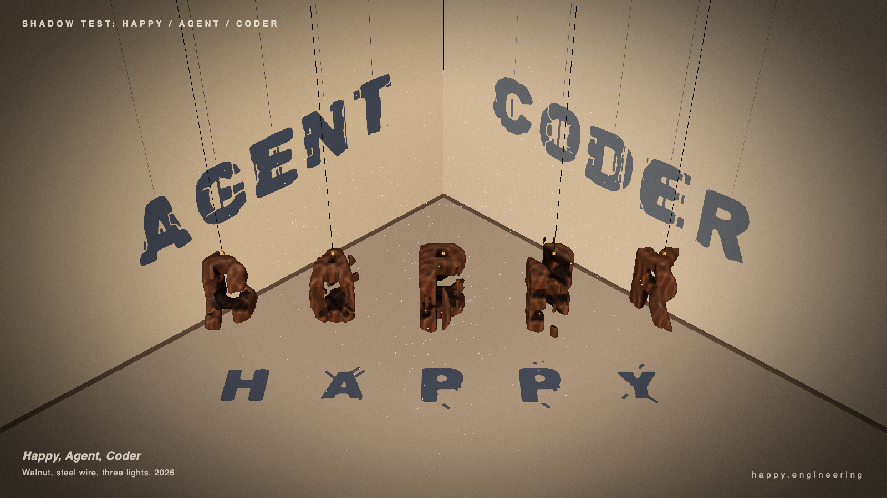

The challenge: a hanging sculpture casts HAPPY on the floor, AGENT on the left wall and CODER on the right. Explore the three builds and compare their geometry, readability and visual style.
These builds have different histories. This is a project record, not a controlled head-to-head model benchmark.
Version
View

Iterated reference · settled frame. Select Explore to drag, orbit and zoom.
01 · Iterated reference
The feasibility and art-direction reference. Developed over several revisions, with visual feedback on word placement, materials and controls.
How it was made
Agent-built reference, refined through multiple passes. Not a blind model submission.
What changed along the way
A third word, HAPPY moved to the floor, a style pass, and controls moved clear of the letters.
Interaction
Orbit, zoom, twist slider, light toggles and cameras at the lights.
Usage
No isolated, comparable token total recorded for this reference.
Started with Fable 5.2 at low effort in a fresh task using prompt v4. Fable's turn failed; the person switched the task to GPT-6.1 Sol, which completed the HTML.
How it was made
Mixed-model continuation with tool-assisted internal checks and iterations. No reference solution was supplied in the opening prompt.
Benchmark status
Preserved as completed. Excluded from Fable-only one-shot scoring.
Interaction
The submitted code already includes orbit, zoom and light cameras under ?explore. This page activates that mode.
Reported output tokens
Fable: 115,708 · Sol: 6,955. Output counters include reasoning where the provider reports it; they are not a price or quota percentage.
A fresh-context attempt at low effort. One response, no tool calls, no reference solution or revision feedback.
Budget conditions
Same v4 task, preceded by instructions to use no tools and aim for 5,000 output tokens. This was a soft target, not an enforced API cap. Different conditions from the tool-assisted Fable → Sol run.
Observed result
Runs without browser errors, but no word shadows appear in the default settled view. Fails the main readability requirement. The sculpture also has visible segmented construction.
Interaction
Orbit and zoom, plus Reset, HAPPY, AGENT and CODER view buttons under ?explore. Included by the model.
Reported usage
44,700 input · 62,274 output · 1,152 cache-read tokens. About 7 minutes 12 seconds. The delivered HTML is 14,202 bytes; total output includes more than the final HTML. Price and quota impact were not reported.
Preservation
First response archived unchanged. No fixes, regeneration or model switch.
Can you read all three words in the same frame? Are they real cast shadows? Do the solids look carved and abstract from the gallery camera? Do the shadows scramble and settle during the ten-second loop? Then compare the materials, lighting and composition.
The completed Fable → Sol build renders without browser errors using the requested Three.js 0.170.0. All words are readable in the settled frame; the sculpture itself looks letter-like, so that requirement remains questionable. Grok also renders without browser errors, but shows no word shadows in its default settled frame. These are observations, not a full pass on every rule.
The original mixed-model and Grok HTML files are archived unchanged. Their playable copies only replace CDN imports with bundled library paths. The reference uses its existing packaged dependencies. Further scene edits should become a new version with their own notes.